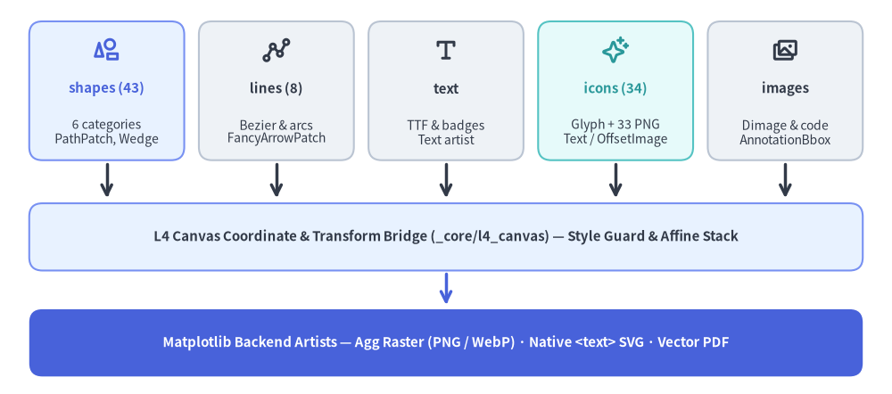
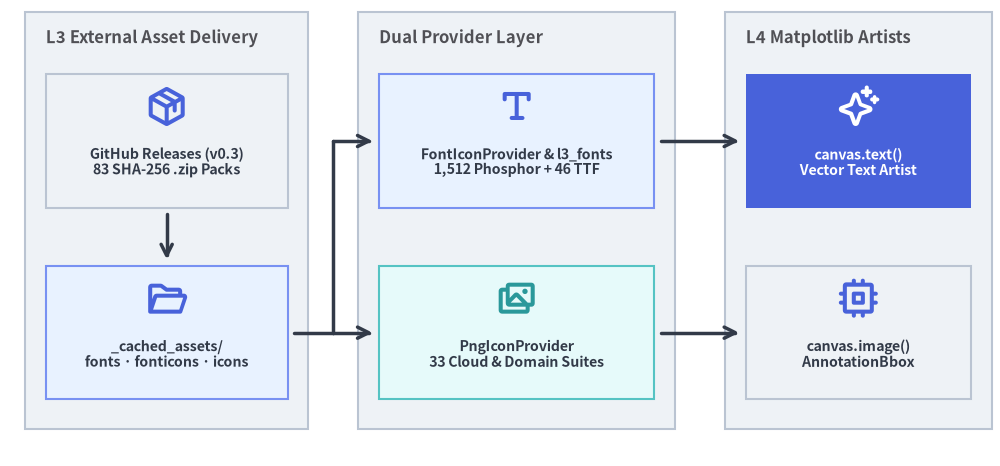

Drawing Primitives & Graphics Backends
Drawlib exposes a declarative, center-anchored functional primitive layer (drawlib.shapes, lines, text, icons, images, and math) backed by _core/l4_canvas. Instead of requiring manual Matplotlib figure/axes wiring or low-level scene-graph boilerplate, every primitive validates its Style token at the boundary, applies active canvas.transform() affine stacks, and emits exact vector or raster Matplotlib artists.

Source Code
from drawlib.canvas import save, setup
from drawlib.icons import phosphor
from drawlib.lines import line
from drawlib.shapes import rectangle
from drawlib.styles import Styles
from drawlib.text import text
setup(width=122, height=54)
# 1. Top Row: 5 Public Primitive Facades (Parallel Lanes, Zero Converging Pileups)
facades = [
(14.6, "shapes (43)", "6 categories\nPathPatch, Wedge", phosphor.shapes, Styles.PrimaryNeutral, Styles.PrimaryBold),
(37.8, "lines (8)", "Bezier & arcs\nFancyArrowPatch", phosphor.line_segments, Styles.Neutral, Styles.DarkBold),
(61.0, "text", "TTF & badges\nText artist", phosphor.text_t, Styles.Neutral, Styles.DarkBold),
(84.2, "icons (34)", "Glyph + 33 PNG\nText / OffsetImage", phosphor.sparkle, Styles.SecondaryNeutral, Styles.SecondaryBold),
(107.4, "images", "Dimage & code\nAnnotationBbox", phosphor.images, Styles.Neutral, Styles.DarkBold),
]
for cx, title, desc, icon_fn, card_style, accent_style in facades:
rectangle((cx, 41.5), width=21.2, height=19.0, style=card_style.patch(shape_r=1.8))
icon_fn((cx, 47.0), width=3.8, style=accent_style)
text((cx, 41.8), title, style=accent_style.patch(text_size=10.8))
text((cx, 35.8), desc, style=Styles.Dark.patch(text_size=10.0))
line((cx, 31.5), (cx, 26.8), arrow_head="->", style=Styles.DarkBold)
# 2. Middle Band: L4 Canvas Coordinate & Transform Bridge
rectangle(
(61.0, 21.5),
width=114.0,
height=9.2,
style=Styles.PrimaryNeutral.patch(shape_r=1.8),
text="L4 Canvas Coordinate & Transform Bridge (_core/l4_canvas) — Style Guard & Affine Stack",
text_style=Styles.DarkBold.patch(text_size=10.8),
)
line((61.0, 16.5), (61.0, 12.2), arrow_head="->", style=Styles.PrimaryBold)
# 3. Bottom Band: Matplotlib Backend Artists & Export Targets
rectangle(
(61.0, 7.0),
width=114.0,
height=9.2,
style=Styles.PrimaryFlat.patch(shape_r=1.8),
text="Matplotlib Backend Artists — Agg Raster (PNG / WebP) · Native <text> SVG · Vector PDF",
text_style=Styles.WhiteBold.patch(text_size=10.8),
)
save()
1. Concept: Center-Anchored Declarative Primitives
All low-level drawing commands (shapes, text, icons, images) default to center-anchored Cartesian placement (cx, cy) (halign="center", valign="center"), combining geometry, stroke/fill styling, rotation (angle), and embedded text alignment in a single call:
from drawlib.shapes import rectangle
from drawlib.styles import Styles
# Draws a rounded card centered at (30, 25) with auto-aligned label typography
rectangle(
(30, 25),
width=36,
height=14,
style=Styles.PrimaryNeutral.patch(shape_r=2.0),
text="Auth Gateway",
text_style=Styles.DarkBold.patch(text_size=11.0),
)
2. Positioning: The Six Primitive & Asset Subsystems
2.1. drawlib.shapes (43 Shape Primitives Across 6 Categories)
src/drawlib/shapes.py re-exports 43 shape functions implemented in _core/l4_canvas/_shapes/:
| Category | Count | Public Shape Functions |
|---|---|---|
| Basic | 6 |
rectangle, circle (supports hole_ratio for rings/donuts), ellipse, wedge, fan, arc |
| Polygon | 9 |
triangle, parallelogram, trapezoid, rhombus, regularpolygon, star, plaque, polygon, shape |
| Arrow | 6 |
arrow, arrow_l, arrow_u, arrow_arc, arrow_polyline, chevron |
| Container | 6 |
cylinder, cube, document, funnel, cloud, brace |
| Badge | 8 |
bubblespeech, pin, tag, ribbon, shield, forbidden, checkmark, explosion |
| Symbol | 8 |
face, clock, sun, moon, heart, lightning, gear, math_symbol |
2.2. drawlib.lines (8 Functions) & drawlib.math
drawlib.lines: Provides 8 stroke and spline primitives:line,lines,line_curved,lines_curved,line_bezier1,line_bezier2,lines_bezier, andline_arc. SupportsLineStyle("solid","dashed","dotted","dashdot") andArrowHead("","->","<-","<->").drawlib.math(_core/l3_math): Pure-Python analytical geometry helpers used across primitives, diagrams, and animations (compute_orthogonal_path,rotate_point,get_rotated_points,get_rotated_path_points,get_point_on_ellipse,get_intermediate_point,get_intermediate_path_points,get_angle,get_distance).
2.3. drawlib.text & drawlib.images (Dimage)
drawlib.text: Exposestext()andtext_vertical(), supporting multi-line spacing (text_line_spacing), optional background badge boxes (text_bg_*), arbitrary rotation, and native<text>preservation (matplotlib.rcParams["svg.fonttype"] = "none") in SVG builds.drawlib.images:image(xy, width, image, *, style=None): Places file paths,PIL.Image.Imagebuffers, orDimageobjects while preserving aspect ratio, optionalimage_tint_color, and optional border frames (image_border_*).Dimage(_core/l3_images): Immutable Pillow image wrapper offering chainable non-destructive operations (.resize(),.crop(),.trim(),.mirror(),.flip(),.fill(),.grayscale(),.colorize(),.invert(),.mosaic(),.blur(),.brightness(),.contrast(),.sepia(),.round_corners(),.circle(),.add_margin()).get_dimage_from_code(): Executes Drawlib Python code in an isolated child canvas and returns the rendered result as an in-memoryDimagefor nested composition.
2.4. drawlib.icons (34 Suites) & drawlib.fonts (46 Font Packs)
drawlib.icons exposes 34 icon suites lazily via PEP 562 __getattr__ and a custom sys.meta_path importer (_IconsSubmoduleFinder / _IconsSubmoduleLoader), ensuring zero import overhead for unused suites:
- Vector Font Icons (
FontIconProvider):phosphorprovides 1,512 canonical Unicode icon glyphs (plus convenience aliases) across 5 TTF font weights (thin,light,regular,bold,fill), compiled fromphosphor_data.jsonvia./dcli codegen icon-phosphorand rendered viafont_icon()->canvas.text(). - Raster Icon Suites (
PngIconProvider— 33 Suites):- 3 Cloud Provider Suites:
gcp,aws,azure. - 15 Tintable Monochrome Domain Suites:
ai,business,client,cloud,cnative,code,data,devops,facility,itservice,network,security,server,social,workspace. - 15 Multi-Color Flat Suites:
original_aithroughoriginal_workspace.
- 3 Cloud Provider Suites:
- Multilingual Typography (
drawlib.fonts): 46 TrueType/OpenType font packages (Font,FontSansSerif,FontSerif,FontMonoSpace,FontRoboto,FontSourceCode,FontArabic,FontBrahmic,FontChinese,FontJapanese,FontKorean,FontThai) plus custom localFontFilesupport.

Source Code
from drawlib.canvas import save, setup
from drawlib.diagrams.architecture import ArchitectureDiagram, Node, NodeGroup, PhosphorIcon
from drawlib.styles import Styles
setup(width=120, height=56)
d = ArchitectureDiagram(
node_style=Styles.PrimaryBold,
node_text_style=Styles.DarkBold.patch(text_size=10.2),
edge_style=Styles.DarkBold,
edge_text_style=Styles.DarkBold.patch(text_size=10.0),
node_card_style=Styles.Neutral,
)
# 1. Left Group: External Release Asset Delivery
delivery = d.add(
NodeGroup(title="L3 External Asset Delivery", width=34.0, height=50.0, style=Styles.Neutral),
xy=(2.0, 3.0),
)
gh_rel = delivery.add(
Node(
"GitHub Releases (v0.3)\n83 SHA-256 .zip Packs",
width=29.0,
height=16.0,
icon=PhosphorIcon.PACKAGE,
icon_size=5.0,
card_style=Styles.Neutral,
),
xy=(17.0, 34.5),
)
cached_dir = delivery.add(
Node(
"_cached_assets/\nfonts · fonticons · icons",
width=29.0,
height=16.0,
icon=PhosphorIcon.FOLDER_OPEN,
icon_size=5.0,
card_style=Styles.PrimaryNeutral,
),
xy=(17.0, 11.5),
)
d.connect(gh_rel, cached_dir, padding=0.8)
# 2. Middle Group: Dual Icon & Font Providers
providers = d.add(
NodeGroup(title="Dual Provider Layer", width=38.0, height=50.0, style=Styles.Neutral),
xy=(42.0, 3.0),
)
font_prov = providers.add(
Node(
"FontIconProvider & l3_fonts\n1,512 Phosphor + 46 TTF",
width=33.0,
height=16.0,
icon=PhosphorIcon.TEXT_T,
icon_size=5.0,
card_style=Styles.PrimaryNeutral,
),
xy=(19.0, 34.5),
)
png_prov = providers.add(
Node(
"PngIconProvider\n33 Cloud & Domain Suites",
width=33.0,
height=16.0,
icon=PhosphorIcon.IMAGES,
icon_size=5.0,
style=Styles.SecondaryBold,
card_style=Styles.SecondaryNeutral,
),
xy=(19.0, 11.5),
)
# 3. Right Group: L4 Matplotlib Artists
artists = d.add(
NodeGroup(title="L4 Matplotlib Artists", width=32.0, height=50.0, style=Styles.Neutral),
xy=(86.0, 3.0),
)
text_art = artists.add(
Node(
"canvas.text()\nVector Text Artist",
width=27.0,
height=16.0,
icon=PhosphorIcon.SPARKLE,
icon_size=5.0,
style=Styles.WhiteBold,
text_style=Styles.WhiteBold.patch(text_size=10.2),
card_style=Styles.PrimaryFlat,
),
xy=(16.0, 34.5),
)
img_art = artists.add(
Node(
"canvas.image()\nAnnotationBbox",
width=27.0,
height=16.0,
icon=PhosphorIcon.CPU,
icon_size=5.0,
card_style=Styles.Neutral,
),
xy=(16.0, 11.5),
)
bus_bottom = d.junction((39.0, 14.5))
bus_top = d.junction((39.0, 37.5))
d.connect(cached_dir, bus_bottom, arrow="-", padding=(0.8, 0.0))
d.connect(bus_bottom, bus_top, arrow="-")
d.connect(bus_top, font_prov, arrow="->", padding=(0.0, 0.8))
d.connect(bus_bottom, png_prov, arrow="->", padding=(0.0, 0.8))
d.connect(font_prov, text_art, padding=0.8)
d.connect(png_prov, img_art, padding=0.8)
d.draw(xy=(60.0, 28.0), align="center")
save()
3. Details: Backend Artist Mapping & Verified Asset Packaging
3.1. Exact Matplotlib Artist Translation (_core/l4_canvas)
_core/l4_canvas translates Drawlib primitives into specific matplotlib artist classes (never relying on FancyBboxPatch, TextPath, or raw AxesImage stretches):
- Shapes (
_shapes/): Rounded polygons, compound cutout rings (hole_ratiowith opposite winding subpaths), and callouts build exactmatplotlib.path.PathBezier splines wrapped inPathPatch, alongside nativePolygon,Circle,Ellipse,RegularPolygon,Wedge, andArcpatches. - Lines & Arrows (
_line.py): All straight, curved, arc, and Bezier paths render throughFancyArrowPatchconfigured withPathvertices,ConnectionStyle, and proportionalmutation_scale. - Typography & Font Icons (
_text.py,_font_icon.py): Bothtext()andfont_icon()resolve TrueType files intoFontPropertiesand appendmatplotlib.text.Textartists so text and Phosphor glyphs remain infinitely sharp in PDF and SVG exports. - Raster Images & PNG Icons (
_image.py):Dimagebuffers convert to RGBA NumPy arrays wrapped insidematplotlib.offsetbox.OffsetImageandAnnotationBbox(..., frameon=False)with zoom calibrated to exact canvas units.
3.2. Deterministic GitHub Release Assets (_core/l3_external)
To keep the PyPI wheel compact while supporting 46 multilingual fonts, 34 icon suites, and 3 GeoMap datasets (83 packages total declared in src/drawlib/_release_assets.py):
./dcli release-assets buildpacks each asset suite viacreate_deterministic_zip_bytes()(normalizing file order, permissions, and timestamps) and records its cryptographicarchive_sha256inReleaseAssetPackage.- At runtime (or ahead of time via
uv run drawlib cache download --all),ReleaseAssetPackage.download_and_extract()downloads the.ziparchive from GitHub Releases (tag="v0.3"), verifies the SHA-256 digest in memory before touching disk, and extracts the files intodrawlib._cached_assets/{fonts,fonticons,icons,maps}/.
Next, explore how these primitives compose into High-Level Components.